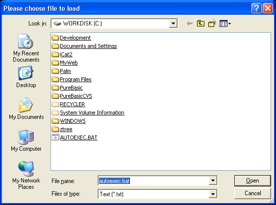

OpenFileRequester()
Syntax
Filename$ = OpenFileRequester(Title$, DefaultFile$, Pattern$, PatternPosition [, Flags])Description
Opens the standard requester for the user to choose a file. The title can be specified to replace the default one. The DefaultFile$ is useful to initialize the requester in the right directory and with the right filename.
Parameters
Title$ The title of the requester window. DefaultFile$ The default file displayed when the requester is opened. Pattern$ A standard filter which allow to display only the files which end with such or such extension. It has to be in the following form : "Text file | *.txt | Music file | *.mus;*.mod" The pattern always works in pairs: name (which really appears in the filter) and extension (ie: *.txt). Several extensions can be specified for a single type by using the ; (semi-colon) separator (not supported on OSX, the requester always displays all files). PatternPosition Specifies which pattern must be the default. It begins from 0 up to the number of pattern. Once the requester has been closed, SelectedFilePattern() can be used to get back the selected pattern (not supported on OSX). Flags (optional) It can be a one of the following values: #PB_Requester_MultiSelection: Enable the multiselection. (see NextSelectedFilename())
Return value
The selected filename, or an empty string if the requester has been canceled by the user.
Remarks
The returned 'Filename$' can be easily split into file, path and extension string with the following functions: GetFilePart(), GetPathPart() and GetExtensionPart().
Example
StandardFile$ = "C:\autoexec.bat" ; set initial file+path to display ; With next string we will set the search patterns ("|" as separator) for file displaying: ; 1st: "Text (*.txt)" as name, ".txt" and ".bat" as allowed extension ; 2nd: "PureBasic (*.pb)" as name, ".pb" as allowed extension ; 3rd: "All files (*.*) as name, "*.*" as allowed extension, valid for all files Pattern$ = "Text (*.txt)|*.txt;*.bat|PureBasic (*.pb)|*.pb|All files (*.*)|*.*" Pattern = 0 ; use the first of the three possible patterns as standard File$ = OpenFileRequester("Please choose file to load", StandardFile$, Pattern$, Pattern) If File$ MessageRequester("Information", "You have selected following file:" + Chr(10) + File$, 0) Else MessageRequester("Information", "The requester was canceled.", 0) EndIf

See Also
NextSelectedFilename()
Supported OS
All